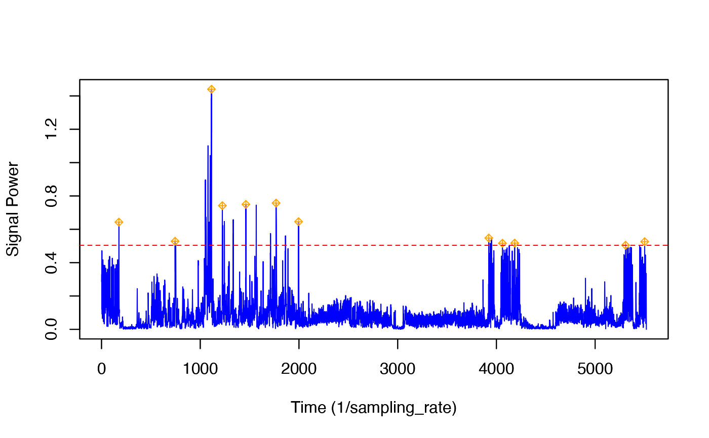

This function detects peaks in time series data that exceed a specified threshold and returns each peak's start time, end time, maximum peak value, time of the maximum peak value, threshold level, and blanking time.
Usage
detect_peaks(
data,
sr,
FUN = NULL,
thresh = NULL,
bktime = NULL,
plot_peaks = NULL,
quiet = FALSE,
...
)Arguments
- data
A vector (of all positive values) or matrix of data to be used in peak detection. If data is a matrix, you must specify a FUN to be applied to data.
- sr
The sampling rate in Hz of the date. This is the same as fs in other tagtools functions. This is used to calculate the bktime in the case that the input for bktime is missing.
- FUN
A function to be applied to data before the data is run through the peak detector. Only specify the function name (i.e. njerk). If left blank, the data input will be immediately passed through the peak detector.
- thresh
The threshold level above which peaks in signal are detected. Inputs must be in the same units as the signal. If the input for thresh is missing/empty, the default level is the 0.99 quantile
- bktime
The specified length of time (seconds) between signal values detected above the threshold value (from the moment the first peak recedes below the threshold level to the moment the second peak surpasses the threshold level) that is required for each value to be considered a separate and unique peak. If the input for bktime is missing/empty the default value for the blanking time is set as the .80 quantile of the vector of time differences for signal values above the specified threshold.
- plot_peaks
A conditional input. If the input is TRUE or missing, an interactive plot is generated, allowing the user to manipulate the thresh and bktime values and observe the changes in peak detection. If the input is FALSE, the interactive plot is not generated. Look to the console for help on how to use the plot upon running of this function.
- quiet
If quiet is true, do not print to the screen
- ...
Additional inputs to be passed to FUN
Value
A data frame containing the start times, end times, peak times, peak maxima, thresh, and bktime. All times are presented as the sampling value.
Note
As specified above under the description for the input of plot_peaks, an interactive plot can be generated, allowing the user to manipulate the thresh and bktime values and observe the changes in peak detection. The plot output is only given if the input for plot_peaks is specified as true or if the input is left missing/empty.
Examples
BW <- beaked_whale
detect_peaks(data = BW$A$data, sr = BW$A$sampling_rate,
FUN = njerk, thresh = NULL, bktime = NULL,
plot_peaks = NULL, sampling_rate = BW$A$sampling_rate, quiet=TRUE)


#> start_time end_time peak_time peak_max thresh bktime
#> 1 176 177 176 0.6430418 0.5039995 104.8
#> 2 745 752 745 0.5283571 0.5039995 104.8
#> 3 1051 1115 1114 1.4400981 0.5039995 104.8
#> 4 1223 1335 1224 0.7419494 0.5039995 104.8
#> 5 1462 1567 1462 0.7495490 0.5039995 104.8
#> 6 1712 1863 1768 0.7573250 0.5039995 104.8
#> 7 1996 1996 1996 0.6457465 0.5039995 104.8
#> 8 3923 3950 3923 0.5477980 0.5039995 104.8
#> 9 4061 4061 4061 0.5163881 0.5039995 104.8
#> 10 4185 4185 4185 0.5174222 0.5039995 104.8
#> 11 5308 5308 5308 0.5044518 0.5039995 104.8
#> 12 5502 5502 5502 0.5258842 0.5039995 104.8